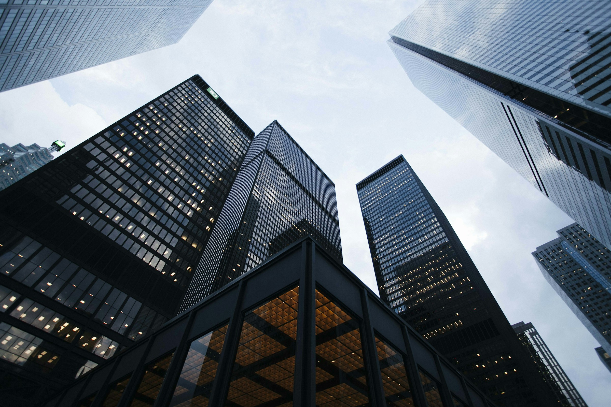
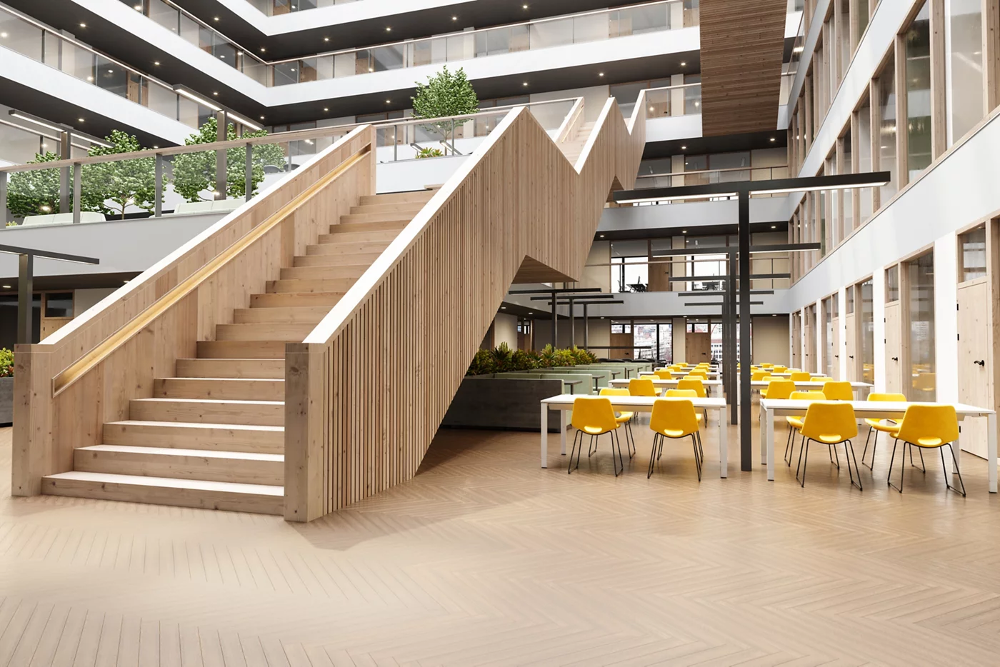
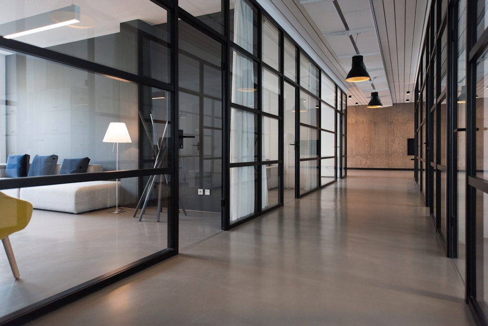

01 / PROPERTY MANAGEMENT자산관리
당신의 자산에,
더 단단한 내일을.
건물의 가치는 매일의 관리에서 시작됩니다. 시설 점검부터 임차인 응대, 운영 현황까지. SPS가 세심하게 연결하고 관리합니다.
Real estate. Real possibilities.
사람을 이해하고, 공간을 연결하고, 가치를 만들어갑니다.
당신의 부동산 파트너, SPS.
A perspective that moves you
현장의 경험과 새로운 관점으로
당신의 자산에 더 나은 방향을 제안합니다.
Our expertise
일상의 운영부터 자산의 미래까지.
공간에 대한 깊은 이해가 실질적인 변화를 만듭니다.

01 / PROPERTY MANAGEMENT자산관리
건물의 가치는 매일의 관리에서 시작됩니다. 시설 점검부터 임차인 응대, 운영 현황까지. SPS가 세심하게 연결하고 관리합니다.

02 / FUTURE OF SPACES공간과 사람
좋은 공간은 그 안의 사람을 이해합니다. 일하고, 만나고, 성장하는 모든 순간을 살펴 더 오래 사랑받는 공간을 만들어갑니다.

03 / TECHNOLOGY & INSIGHTS기술과 인사이트
반복되는 업무는 간편하게, 흩어진 정보는 한눈에. 현장의 경험과 기술을 더해 자산의 오늘을 이해하고 내일을 준비합니다.
Solutions for you
Perspectives for what’s next
자료의 출처와 분석 근거를 갖춘 글을 이곳에 소개합니다.
수록 글은 편집 초안입니다. 사진은 실제 관리 사례를 나타내지 않습니다.
인사이트 전체 보기Frequently asked questions
소규모 빌딩부터 업무·상업 공간까지, 건물의 규모와 운영 상황에 맞는 관리 방식을 함께 살펴봅니다. 건물 진단에서 필요한 관리 영역을 먼저 확인해 보세요.
자산관리, 임대 운영, 스마트 운영 중 필요한 영역을 중심으로 시작할 수 있습니다. 건물 현황과 기존 관리 체계에 맞춰 적합한 범위를 정합니다.
건물 유형과 규모, 관리 고민을 선택하면 우선 확인할 항목을 바로 안내합니다. 개인 정보를 수집하지 않는 참고용 가이드입니다.
Let’s move forward
작은 질문에서 시작되는 큰 변화.
우리 건물에 맞는 관리 방향을 찾아보세요.
3가지 질문으로 시작하는 새로운 가능성